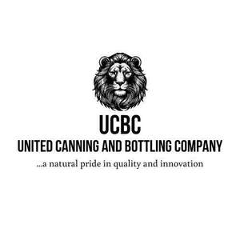

Trade Mark Journal No.2025/039 26 September 2025
UK00004263051 11 September 2025 (5,29,30,31,32,33,39,40,43)

- Class 5
- Medicinal beverages; Beverages for infants.
- Class 29
- Dairy-based beverages; Milk-based beverages; Creamers for beverages; Milk beverages; Yogurt-based beverages; Yoghurt beverages; Milk-based beverages containing coffee; Yoghurt-based beverages; Flavoured milk beverages; Whiteners [dairy] for beverages.
- Class 30
- Tea-based beverages; Beverages (Tea-based -); Coffee beverages; Coffee-based beverages; Beverages (Coffee-based -); Flavorings for beverages; Tea beverages; Chocolate-based beverages; Beverages (Chocolate-based -); Flavourings for beverages; Cocoa-based beverages; Beverages (Cocoa-based -); Chocolate beverages; Cocoa beverages; Flavourings of tea for food or beverages; Prepared coffee beverages; Tea-based beverages with fruit flavoring; Tea beverages (Non-medicated -); Chocolate-based beverages with milk; Coffee beverages with milk; Tea beverages with milk; Prepared coffee and coffee-based beverages; Flavourings of lemons for food or beverages; Carbonated and non-carbonated tea based beverages; Beverages made from coffee; Beverages made of coffee.
- Class 31
- Beverages for pets; Beverages for dogs; Beverages for animals; Beverages for canines; Pet beverages; Animal beverages; Beverages for cats.
- Class 32
- Non-alcoholic beverages; Beverages (Non-alcoholic -); Syrups for beverages; Fruit-flavored beverages; Cordials (non-alcoholic beverages); Non-alcoholic carbonated beverages; Fruit-based beverages; Beer-based beverages; Fruit beverages (non-alcoholic); Sherbets [beverages]; Fruit-flavoured beverages; Kvass [non-alcoholic beverages]; Non-alcoholic beverages flavored with coffee; Non-alcoholic malt beverages; Non-alcoholic beer flavored beverages; Fruit beverages; Sorbets [beverages]; Non-alcoholic honey-based beverages; Honey-based beverages (Non-alcoholic -); Non-alcoholic beverages flavoured with coffee; Isotonic beverages; Non-alcoholic beverages flavored with tea; Squashes [non-alcoholic beverages]; Vegetable-based beverages; Smoothies [non-alcoholic fruit beverages]; Non-alcoholic beverages with tea flavor; Non-alcoholic syrups for making beverages; Non-alcoholic flavored carbonated beverages; Syrups for making non-alcoholic beverages; Coconut-based beverages; Sherbet beverages; Non-alcoholic drinks; Non-alcoholic beverages flavoured with tea; Non-alcoholic soda beverages flavoured with tea; Waters [beverages]; Frozen carbonated beverages; Root beers, non-alcoholic beverages; Iced fruit beverages; Fruit juice beverages (Non-alcoholic -); Non-alcoholic fruit juice beverages; Whey beverages; Beverages (Whey -); Non-alcoholic fruit vinegar beverages; Non-alcoholic beverages containing fruit juices; Alcohol free beverages; Non-alcoholic dried fruit beverages; Carbonated non-alcoholic drinks; Protein-enriched sports beverages; Flavoured carbonated beverages; Frozen fruit-based beverages; Non-alcoholic beverages containing vegetable juices; Non-alcoholic fruit drinks; Sarsaparilla [non-alcoholic beverage]; Non-alcoholic malt free beverages [other than for medical use]; Kvass [non-alcoholic beverage]; Extracts for making non-alcoholic beverages; Non-alcoholic malt drinks; Non-alcoholic grape juice beverages; Syrups and other non-alcoholic preparations for making beverages; Non-alcoholic fruit extracts used in the preparation of beverages; Frozen fruit beverages; Vegetable juices [beverages]; Isotonic non-alcoholic drinks; Syrups for making beverages.
- Class 33
- Wine-based beverages; Rum-based beverages; Spirits [beverages]; Cordials [alcoholic beverages]; Alcoholic beverages of fruit; Alcoholic fruit beverages; Pre-mixed alcoholic beverages; Sugarcane-based alcoholic beverages; Distilled beverages; Beverages (Distilled -); Alcoholic carbonated beverages, except beer; Alcoholic beverages, except beer; Alcoholic beverages (except beer); Beverages (Alcoholic -), except beer; Alcoholic beverages [except beers]; Alcoholic beverages except beers; Alcoholic beverages (except beers); Pre-mixed alcoholic beverages, other than beer-based; Fruit (Alcoholic beverages containing -); Alcoholic beverages containing fruit; Alcoholic tea-based beverage; Grain-based distilled alcoholic beverages; Alcoholic coffee-based beverage.
- Class 39
- Storage of beverages; Distribution services relating to beverages, such as alcoholic beverages.
- Class 40
- Pasteurising of food and beverages; Pasteurizing of food and beverages; Pasteurization services for food and beverages.
- Class 43
- Serving of alcoholic beverages; Providing food and beverages; Provision of food and beverages; Preparation of food and beverages; Serving beverages in microbreweries.
United canning Ltd